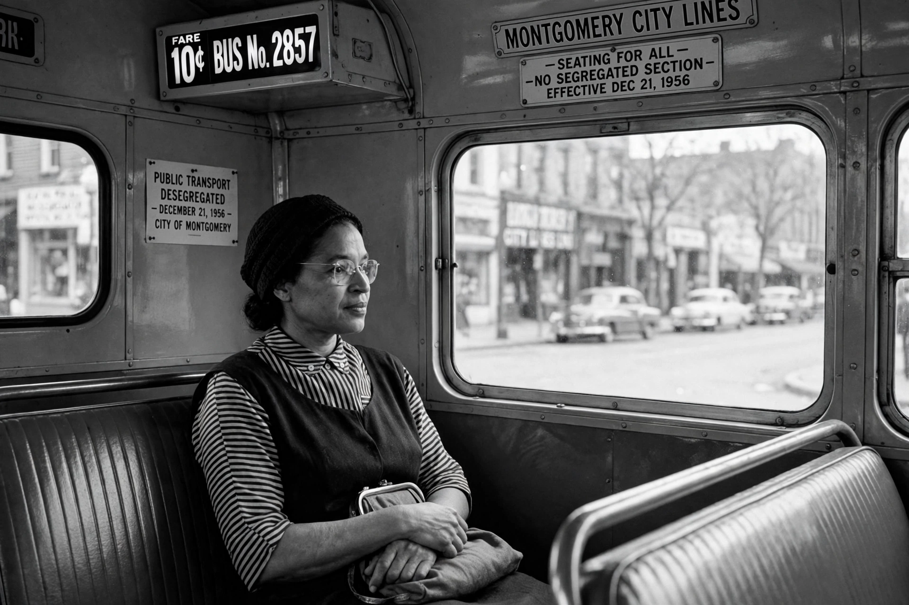

Rosa Louise McCauley Parks (February 4, 1913 – October 24, 2005) was an American activist in the civil rights movement, best known for her pivotal role in the Montgomery bus boycott. On December 1, 1955, in Montgomery, Alabama, Parks rejected a bus driver's order to vacate a row of seats in the "colored" section for a white passenger after the "white" section was filled. Her arrest sparked a 381-day mass boycott that ended when the United States Supreme Court ruled bus segregation unconstitutional. The United States Congress has called her "the first lady of civil rights" and "the mother of the freedom movement."
| Born | Rosa Louise McCauley, February 4, 1913, Tuskegee, Alabama |
|---|---|
| Died | October 24, 2005 (aged 92), Detroit, Michigan |
| Occupation | Civil rights activist; secretary of the Montgomery NAACP chapter |
| Known for | Montgomery bus boycott (1955–1956) |
| Spouse | Raymond Parks (m. 1932; died 1977) |
| Awards | Presidential Medal of Freedom (1996); Congressional Gold Medal (1999) |

Parks was born in Tuskegee, Alabama, and raised near Montgomery. She attended Alabama State Teachers College briefly and worked as a seamstress. With her husband Raymond Parks she was active in the Montgomery chapter of the NAACP, serving as its secretary and youth leader; she investigated racial violence, including the cases of Recy Taylor and Jeremiah Reeves, and trained in nonviolent protest at the Highlander Folk School in Tennessee in the summer of 1955.
On December 1, 1955, Parks boarded a city bus and sat in the "colored" section. When the white section filled, driver James F. Blake ordered her row to move; three passengers complied, but Parks refused and was arrested for violating the segregation ordinance. She was not the first to resist — Claudette Colvin and Mary Louise Smith had been arrested earlier that year — but NAACP leader E. D. Nixon and others judged her a strong standard-bearer, and her arrest triggered the Montgomery bus boycott, organised by the new Montgomery Improvement Association under the young Martin Luther King Jr. For 381 days Black residents walked, carpooled and boycotted the buses; on November 13, 1956, the Supreme Court affirmed Browder v. Gayle, holding bus segregation unconstitutional, and the boycott ended on December 20, 1956.
Parks and her husband lost their jobs and received death threats; in 1957 they moved to Detroit, where she worked for Congressman John Conyers from 1965 to 1988 and co-founded the Rosa and Raymond Parks Institute for Self Development in 1987 to educate young people about civil rights. She published her autobiography, Rosa Parks: My Story, in 1992. She received the Presidential Medal of Freedom in 1996 and the Congressional Gold Medal in 1999. After her death in 2005 she became the first woman to lie in honour in the rotunda of the United States Capitol.
Parks's act of defiance became an enduring symbol of dignified resistance to racial segregation, helping to launch the modern civil rights movement. Her papers are held by the Library of Congress, and a statue of her stands in the U.S. Capitol's National Statuary Hall.